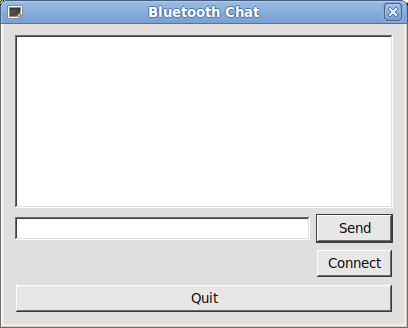

Bluetooth Chat Example
An example showing communication through Bluetooth.
The Bluetooth Chat example shows how to use the Qt Bluetooth API to communicate with another application on a remote device using Bluetooth.

The Bluetooth Chat example implements a simple chat program between multiple parties. The application always acts as both a server and a client eliminating the need to determine who should connect to whom.
Running the Example
To run the example from Qt Creator, open the Welcome mode and select the example from Examples. For more information, visit Building and Running an Example.
Chat Server
The chat server is implemented by the ChatServer class. The ChatServer class is declared as:
class ChatServer : public QObject { Q_OBJECT public: explicit ChatServer(QObject *parent = nullptr); ~ChatServer(); void startServer(const QBluetoothAddress &localAdapter = QBluetoothAddress()); void stopServer(); public slots: void sendMessage(const QString &message); signals: void messageReceived(const QString &sender, const QString &message); void clientConnected(const QString &name); void clientDisconnected(const QString &name); private slots: void clientConnected(); void clientDisconnected(); void readSocket(); private: QBluetoothServer *rfcommServer = nullptr; QBluetoothServiceInfo serviceInfo; QList<QBluetoothSocket *> clientSockets; };
The first thing the chat server needs to do is create an instance of QRfcommServer to listen for incoming Bluetooth connections. Our clientConnected() slot will be called whenever a new connection is created.
rfcommServer = new QBluetoothServer(QBluetoothServiceInfo::RfcommProtocol, this); connect(rfcommServer, &QBluetoothServer::newConnection, this, QOverload<>::of(&ChatServer::clientConnected)); bool result = rfcommServer->listen(localAdapter); if (!result) { qWarning() << "Cannot bind chat server to" << localAdapter.toString(); return; }
The chat server is only useful if others know that it is there. To enable other devices to discover it, a record describing the service needs to be published in the systems SDP (Service Discovery Protocol) database. The QBluetoothServiceInfo class encapsulates a service record.
We will publish a service record that contains some textural descriptions of the services, a UUID that uniquely identifies the service, the discoverability attribute, and connection parameters.
The textural description of the service is stored in the ServiceName, ServiceDescription, and ServiceProvider attributes.
serviceInfo.setAttribute(QBluetoothServiceInfo::ServiceName, tr("Bt Chat Server")); serviceInfo.setAttribute(QBluetoothServiceInfo::ServiceDescription, tr("Example bluetooth chat server")); serviceInfo.setAttribute(QBluetoothServiceInfo::ServiceProvider, tr("qt-project.org"));
Bluetooth uses UUIDs as unique identifiers. The chat service uses a randomly generated UUID.
static const QLatin1String serviceUuid("e8e10f95-1a70-4b27-9ccf-02010264e9c8"); serviceInfo.setServiceUuid(QBluetoothUuid(serviceUuid));
A Bluetooth service is only discoverable if it is in the PublicBrowseGroup.
QBluetoothServiceInfo::Sequence publicBrowse; publicBrowse << QVariant::fromValue(QBluetoothUuid(QBluetoothUuid::PublicBrowseGroup)); serviceInfo.setAttribute(QBluetoothServiceInfo::BrowseGroupList, publicBrowse);
The ProtocolDescriptorList attribute is used to publish the connection parameters that the remote device requires to connect to our service. Here we specify that the Rfcomm protocol is used and set the port number to the port that our rfcommServer instance is listening to.
QBluetoothServiceInfo::Sequence protocolDescriptorList; QBluetoothServiceInfo::Sequence protocol; protocol << QVariant::fromValue(QBluetoothUuid(QBluetoothUuid::L2cap)); protocolDescriptorList.append(QVariant::fromValue(protocol)); protocol.clear(); protocol << QVariant::fromValue(QBluetoothUuid(QBluetoothUuid::Rfcomm)) << QVariant::fromValue(quint8(rfcommServer->serverPort())); protocolDescriptorList.append(QVariant::fromValue(protocol)); serviceInfo.setAttribute(QBluetoothServiceInfo::ProtocolDescriptorList, protocolDescriptorList);
Finally, we register the service record with the system.
serviceInfo.registerService(localAdapter);
As mentioned earlier, incoming connections are handled in the clientConnected() slot where pending connections are connected to the readyRead() and disconnected() signals. The signals notify others that a new client has connected.
void ChatServer::clientConnected() { QBluetoothSocket *socket = rfcommServer->nextPendingConnection(); if (!socket) return; connect(socket, &QBluetoothSocket::readyRead, this, &ChatServer::readSocket); connect(socket, &QBluetoothSocket::disconnected, this, QOverload<>::of(&ChatServer::clientDisconnected)); clientSockets.append(socket); emit clientConnected(socket->peerName()); }
The readSocket() slot is called whenever data is ready to be read from a client socket. The slot reads individual lines from the socket, converts them from UTF-8, and emits the messageReceived() signal.
void ChatServer::readSocket() { QBluetoothSocket *socket = qobject_cast<QBluetoothSocket *>(sender()); if (!socket) return; while (socket->canReadLine()) { QByteArray line = socket->readLine().trimmed(); emit messageReceived(socket->peerName(), QString::fromUtf8(line.constData(), line.length())); } }
The clientDisconnected() slot is called whenever a client disconnects from the service. The slot emits a signal to notify others that a client has disconnected, and deletes the socket.
void ChatServer::clientDisconnected() { QBluetoothSocket *socket = qobject_cast<QBluetoothSocket *>(sender()); if (!socket) return; emit clientDisconnected(socket->peerName()); clientSockets.removeOne(socket); socket->deleteLater(); }
The sendMessage() slot is used to send a message to all connected clients. The message is converted into UTF-8 and appended with a newline before being sent to all clients.
void ChatServer::sendMessage(const QString &message) { QByteArray text = message.toUtf8() + '\n'; for (QBluetoothSocket *socket : qAsConst(clientSockets)) socket->write(text); }
When the chat server is stopped the service record is removed from the system SDP database, all connected client sockets are deleted, and the QRfcommServer instance is deleted.
void ChatServer::stopServer() { // Unregister service serviceInfo.unregisterService(); // Close sockets qDeleteAll(clientSockets); // Close server delete rfcommServer; rfcommServer = nullptr; }
Chat Client
The chat client is implemented by the ChatClient class. The ChatClient class is declared as:
class ChatClient : public QObject { Q_OBJECT public: explicit ChatClient(QObject *parent = nullptr); ~ChatClient(); void startClient(const QBluetoothServiceInfo &remoteService); void stopClient(); public slots: void sendMessage(const QString &message); signals: void messageReceived(const QString &sender, const QString &message); void connected(const QString &name); void disconnected(); void socketErrorOccurred(const QString &errorString); private slots: void readSocket(); void connected(); void onSocketErrorOccurred(QBluetoothSocket::SocketError); private: QBluetoothSocket *socket = nullptr; };
The client creates a new QBluetoothSocket and connects to the remote service described by the remoteService parameter. Slots are connected to the sockets readyRead(), connected() and disconnected() signals.
void ChatClient::startClient(const QBluetoothServiceInfo &remoteService) { if (socket) return; // Connect to service socket = new QBluetoothSocket(QBluetoothServiceInfo::RfcommProtocol); qDebug() << "Create socket"; socket->connectToService(remoteService); qDebug() << "ConnectToService done"; connect(socket, &QBluetoothSocket::readyRead, this, &ChatClient::readSocket); connect(socket, &QBluetoothSocket::connected, this, QOverload<>::of(&ChatClient::connected)); connect(socket, &QBluetoothSocket::disconnected, this, &ChatClient::disconnected); connect(socket, QOverload<QBluetoothSocket::SocketError>::of(&QBluetoothSocket::error), this, &ChatClient::onSocketErrorOccurred); }
On successful socket connection we emit a signal to notify others.
void ChatClient::connected() { emit connected(socket->peerName()); }
Similarly to the chat server, the readSocket() slot is called when data is available from the socket. Lines are read individually and converted from UTF-8. The messageReceived() signal is emitted.
void ChatClient::readSocket() { if (!socket) return; while (socket->canReadLine()) { QByteArray line = socket->readLine(); emit messageReceived(socket->peerName(), QString::fromUtf8(line.constData(), line.length())); } }
The sendMessage() slot is used to send a message to the remote device. The message is converted to UTF-8 and a newline is appended.
void ChatClient::sendMessage(const QString &message) { QByteArray text = message.toUtf8() + '\n'; socket->write(text); }
To disconnect from the remote chat service, the QBluetoothSocket instance is deleted.
void ChatClient::stopClient() { delete socket; socket = nullptr; }
Chat Dialog
The main window of this example is the chat dialog, implemented in the Chat class. This class displays a chat session between a single ChatServer and zero or more ChatClients. The Chat class is declared as:
class Chat : public QDialog { Q_OBJECT public: explicit Chat(QWidget *parent = nullptr); ~Chat(); signals: void sendMessage(const QString &message); private slots: void connectClicked(); void sendClicked(); void showMessage(const QString &sender, const QString &message); void clientConnected(const QString &name); void clientDisconnected(const QString &name); void clientDisconnected(); void connected(const QString &name); void reactOnSocketError(const QString &error); void newAdapterSelected(); private: int adapterFromUserSelection() const; int currentAdapterIndex = 0; Ui_Chat *ui; ChatServer *server; QList<ChatClient *> clients; QList<QBluetoothHostInfo> localAdapters; QString localName; };
First we construct the user interface
ui->setupUi(this); connect(ui->quitButton, &QPushButton::clicked, this, &Chat::accept); connect(ui->connectButton, &QPushButton::clicked, this, &Chat::connectClicked); connect(ui->sendButton, &QPushButton::clicked, this, &Chat::sendClicked);
We create an instance of the ChatServer and respond to its clientConnected(), clientDiconnected(), and messageReceived() signals.
server = new ChatServer(this); connect(server, QOverload<const QString &>::of(&ChatServer::clientConnected), this, &Chat::clientConnected); connect(server, QOverload<const QString &>::of(&ChatServer::clientDisconnected), this, QOverload<const QString &>::of(&Chat::clientDisconnected)); connect(server, &ChatServer::messageReceived, this, &Chat::showMessage); connect(this, &Chat::sendMessage, server, &ChatServer::sendMessage); server->startServer();
In response to the clientConnected() and clientDisconnected() signals of the ChatServer, we display the typical "X has joined chat." and "Y has left." messages in the chat session.
void Chat::clientConnected(const QString &name) { ui->chat->insertPlainText(QString::fromLatin1("%1 has joined chat.\n").arg(name)); } void Chat::clientDisconnected(const QString &name) { ui->chat->insertPlainText(QString::fromLatin1("%1 has left.\n").arg(name)); }
Incoming messages from clients connected to the ChatServer are handled in the showMessage() slot. The message text tagged with the remote device name is displayed in the chat session.
void Chat::showMessage(const QString &sender, const QString &message) { ui->chat->insertPlainText(QString::fromLatin1("%1: %2\n").arg(sender, message)); ui->chat->ensureCursorVisible(); }
In response to the connect button being clicked, the application starts service discovery and presents a list of discovered chat services on remote devices. A ChatClient for the service is selected by the user.
void Chat::connectClicked() { ui->connectButton->setEnabled(false); // scan for services const QBluetoothAddress adapter = localAdapters.isEmpty() ? QBluetoothAddress() : localAdapters.at(currentAdapterIndex).address(); RemoteSelector remoteSelector(adapter); #ifdef Q_OS_ANDROID if (QtAndroid::androidSdkVersion() >= 23) remoteSelector.startDiscovery(QBluetoothUuid(reverseUuid)); else remoteSelector.startDiscovery(QBluetoothUuid(serviceUuid)); #else remoteSelector.startDiscovery(QBluetoothUuid(serviceUuid)); #endif if (remoteSelector.exec() == QDialog::Accepted) { QBluetoothServiceInfo service = remoteSelector.service(); qDebug() << "Connecting to service 2" << service.serviceName() << "on" << service.device().name(); // Create client qDebug() << "Going to create client"; ChatClient *client = new ChatClient(this); qDebug() << "Connecting..."; connect(client, &ChatClient::messageReceived, this, &Chat::showMessage); connect(client, &ChatClient::disconnected, this, QOverload<>::of(&Chat::clientDisconnected)); connect(client, QOverload<const QString &>::of(&ChatClient::connected), this, &Chat::connected); connect(client, &ChatClient::socketErrorOccurred, this, &Chat::reactOnSocketError); connect(this, &Chat::sendMessage, client, &ChatClient::sendMessage); qDebug() << "Start client"; client->startClient(service); clients.append(client); } ui->connectButton->setEnabled(true); }
In reponse to the connected() signals from ChatClient, we display the a "Joined chat with X." message in the chat session.
void Chat::connected(const QString &name) { ui->chat->insertPlainText(QString::fromLatin1("Joined chat with %1.\n").arg(name)); }
Messages are sent to all remote devices via the ChatServer and ChatClient instances by emitting the sendMessage() signal.
void Chat::sendClicked() { ui->sendButton->setEnabled(false); ui->sendText->setEnabled(false); showMessage(localName, ui->sendText->text()); emit sendMessage(ui->sendText->text()); ui->sendText->clear(); ui->sendText->setEnabled(true); ui->sendButton->setEnabled(true); }
We need to clean up ChatClient instances when the remote device forces a disconnect.
void Chat::clientDisconnected() { ChatClient *client = qobject_cast<ChatClient *>(sender()); if (client) { clients.removeOne(client); client->deleteLater(); } }